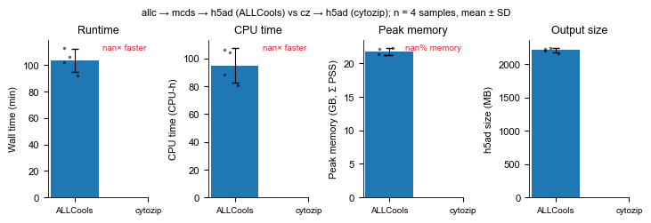
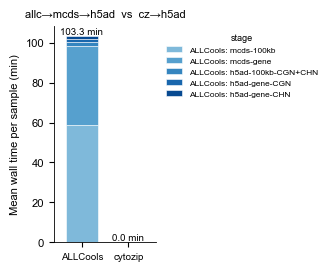
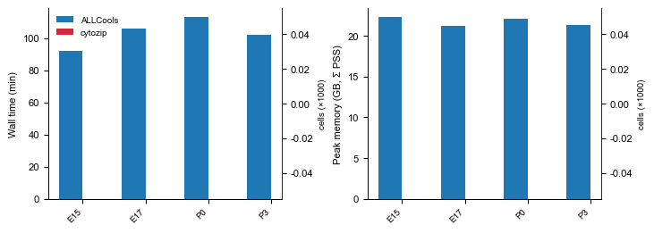
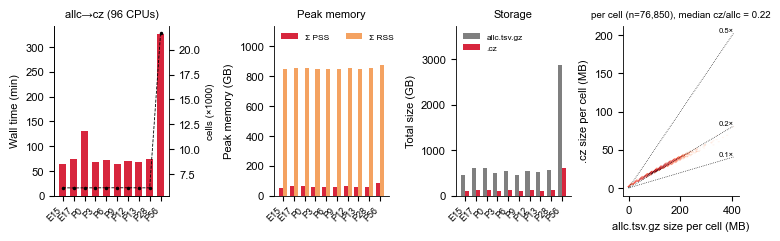

Benchmark: allc → mcds → h5ad (ALLCools / pym3c) vs cz → h5ad (cytozip)
Compare the two routes from single-cell methylation calls to an AnnData (.h5ad) feature matrix on the mouse developing frontal cortex snm3C-seq data set (10 age groups, ~6k cells each, P56 ~21.6k cells):
Pipeline A — ALLCools / pym3c |
Pipeline B — cytozip |
|
|---|---|---|
input |
|
|
step 1 |
|
|
step 2 |
|
|
step 3 |
|
|
step 4/5 |
|
|
output |
4 × h5ad, |
4 × h5ad, |
Both pipelines run sequentially on the same node with identical resources (NCPU worker processes each, 96 CPUs / 220 GB node) and are driven by the same commands pym3c uses in production (pym3c/notebooks/projects/mouse_pfc.md). Every stage is wrapped by scripts/bench_run.py, which samples the whole process tree once per second and records:
wall_s— wall-clock time;cpu_user_s/cpu_sys_s— exact CPU time fromwait4()(all workers included)max_rss_sum_mb— peak Σ RSS over all processes (whattop/ SLURMMaxRSS-like accounting shows)max_pss_sum_mb— peak Σ PSS (proportional set size: pages shared between fork workers counted once → true physical footprint)max_rss_single_mb— largest single-process RSS (what/usr/bin/time %Mreports)output_size_mb— size of the produced file(s)
Everything lives in ~/Projects/test_cytozip/to_adata/ (scripts, logs, mcds, h5ad, tables, figures). The one-off allc → cz conversion (czip allc2cz) is timed as well so it can optionally be charged to pipeline B.
0. How to run (one interactive node, sequential)
All steps run one after another on a single node (96 CPUs / 220 GB). Both pipelines use the same NCPU (default 96, env.sh); the one-off allc → cz uses A2C_NCPU (default 96).
salloc -A mcb130189 -p shared -N 1 -n 96 --mem=220G -t 2-00:00:00 # or sinteractive
cd ~/Projects/test_cytozip/to_adata
tmux # recommended: survives a dropped SSH session
bash run_all.sh # 00 -> 01 -> 02 -> 03 -> 04 -> 05, log in logs/run_all.<date>.log
# NCPU=48 bash run_all.sh # fewer workers for the two pipelines (always identical for both)
# STEPS="02 03" bash run_all.sh # only some steps
or step by step:
bash scripts/00_prepare.sh # check the pre-built CGN/CHN indexes, write tables/<age>.allc_path.tsv, mkdir mapped/<age>/cz
bash scripts/01_allc2cz.sh # allc -> cz for every age (+ timing / size logs)
bash scripts/02_allcools_pipeline.sh # pipeline A: allc -> mcds -> h5ad for every age
bash scripts/03_cytozip_pipeline.sh # pipeline B: cz -> h5ad for every age (requires 01 done for that age)
bash scripts/04_make_subsets.sh # nested random P56 subsets (500 ... 16000 cells)
bash scripts/05_scaling.sh # both pipelines on every subset
# any script also accepts sample names: bash scripts/02_allcools_pipeline.sh P0 P56
Resumable: every stage is wrapped by bench_run.py --resume; a stage whose logs/<pipeline>.<name>.tsv already has an exit_code == 0 row is skipped, and stale outputs of a failed / interrupted stage are deleted before it is redone. If the allocation dies, simply re-run the same command. FORCE=1 redoes finished work (01_allc2cz.sh additionally refuses to run on a half-filled cz/ dir without FORCE=1, because czip allc2cz skips existing files and the time would be
wrong).
Resulting layout:
to_adata/
├── env.sh shared config (paths, NCPU, A2C_NCPU, samples, BENCH, stage_done())
├── run_all.sh runs steps 00-05 in order (STEPS=... to pick)
├── scripts/
│ ├── bench_run.py process-tree time / memory monitor (+ --resume) -> logs/<pipeline>.<name>.tsv
│ ├── 00_prepare.sh check indexes, allc tables, cz dirs
│ ├── 01_allc2cz.sh [samples...] -> mapped/<age>/cz/, logs/allc2cz.<age>.{tsv,size.tsv,cells.tsv}
│ ├── 02_allcools_pipeline.sh [samples...] | --one <name> <allc_table> -> mcds/, allcools/<name>/*.h5ad
│ ├── 03_cytozip_pipeline.sh [samples...] | --one <name> <cz_dir> -> cytozip/<name>/*.h5ad
│ ├── 04_make_subsets.sh P56 subsets -> tables/P56_sub*.allc_path.tsv, cz_subsets/P56_sub*/
│ └── 05_scaling.sh [sizes...] runs 02/03 --one for every subset
├── logs/ tables/ figures/ mcds/ allcools/ cytozip/ cz_subsets/
[1]:
import os, sys, glob, re, textwrap, subprocess
import numpy as np
import pandas as pd
import matplotlib as mpl
import matplotlib.pyplot as plt
WORKDIR = os.path.expanduser("~/Projects/test_cytozip/to_adata")
os.chdir(WORKDIR)
LOG_DIR, TABLE_DIR, FIG_DIR = "logs", "tables", "figures"
os.makedirs(TABLE_DIR, exist_ok=True); os.makedirs(FIG_DIR, exist_ok=True)
SAMPLES = ['E15', 'E17', 'P0', 'P3', 'P6', 'P9', 'P12', 'P13', 'P28', 'P56']
STAGES = ['100kb-CGN', '100kb-CHN', 'gene-CGN', 'gene-CHN']
# manuscript plotting style (same as notebooks/benchmark/benchmark_methylation_calling.ipynb)
mpl.rcParams['pdf.fonttype'] = 42
mpl.rcParams['ps.fonttype'] = 42
mpl.rcParams['font.family'] = 'Arial'
mpl.rcParams['font.size'] = 8
mpl.rcParams['axes.linewidth'] = 0.6
COLORS = {'ALLCools': '#1f77b4', 'cytozip': '#d7263d', 'cytozip (+allc2cz)': '#f4a261'}
LABEL = {'allcools': 'ALLCools', 'cytozip': 'cytozip'}
def savefig(fig, name):
for ext in ('pdf', 'png'):
fig.savefig(f"{FIG_DIR}/{name}.{ext}", bbox_inches='tight', dpi=300)
print('saved', f"{FIG_DIR}/{name}.pdf/.png")
def despine(ax):
for s in ('top', 'right'):
ax.spines[s].set_visible(False)
print(subprocess.run(['bash', '-c', 'source env.sh; echo NCPU=$NCPU A2C_NCPU=$A2C_NCPU; czip --version 2>/dev/null || python -c "import cytozip;print(cytozip.__version__)"; allcools --version'],
capture_output=True, text=True).stdout)
NCPU=96 A2C_NCPU=96
czip 0.4.3.dev1
1.4.dev10+g69625b7fc
Scripts used (for the record)
[2]:
for f in ['env.sh', 'run_all.sh', 'scripts/bench_run.py', 'scripts/00_prepare.sh', 'scripts/01_allc2cz.sh',
'scripts/02_allcools_pipeline.sh', 'scripts/03_cytozip_pipeline.sh', 'scripts/04_make_subsets.sh', 'scripts/05_scaling.sh']:
print('=' * 100); print('#', f); print('=' * 100)
print(open(f).read())
====================================================================================================
# env.sh
====================================================================================================
#!/bin/bash
# Shared configuration for the allc->mcds->h5ad (ALLCools/pym3c) vs cz->h5ad (cytozip)
# benchmark. Every script under scripts/ sources this file.
#
# Everything runs directly (sequentially) on ONE interactive node, e.g.
# salloc -A mcb130189 -p shared -N 1 -n 96 --mem=300G -t 2-00:00:00 # 96 300 (null) b000
# then: bash run_all.sh (or the scripts/0X_*.sh one by one, in order)
# ---- conda env ---------------------------------------------------------------
CONDA_ENV_BIN="/home/x-wding2/Software/conda/m3c/bin"
export PATH="${CONDA_ENV_BIN}:${PATH}"
PYTHON="${CONDA_ENV_BIN}/python"
CZIP="${CONDA_ENV_BIN}/czip"
ALLCOOLS="${CONDA_ENV_BIN}/allcools"
PYM3C="${CONDA_ENV_BIN}/pym3c"
# ---- directories -------------------------------------------------------------
WORKDIR="${HOME}/Projects/test_cytozip/to_adata" # all benchmark outputs
MAPPED_DIR="${HOME}/Projects/mouse_dev/mapped" # <sample>/allc/*.allc.tsv.gz ; <sample>/cz/*.cz
SCRIPT_DIR="${WORKDIR}/scripts"
LOG_DIR="${WORKDIR}/logs" # one TSV per (pipeline, name) + stdout/stderr
TABLE_DIR="${WORKDIR}/tables" # allc_path tables, n_cells, subsets
MCDS_DIR="${WORKDIR}/mcds" # intermediate .mcds of the ALLCools pipeline
ALLCOOLS_OUT="${WORKDIR}/allcools" # <name>/<name>.{100kb,gene}-{CGN,CHN}.h5ad
CYTOZIP_OUT="${WORKDIR}/cytozip" # <name>/<name>.{100kb,gene}-{CGN,CHN}.h5ad
CZ_SUBSET_DIR="${WORKDIR}/cz_subsets" # symlink dirs for the cell-number scaling series
FIG_DIR="${WORKDIR}/figures"
mkdir -p "${LOG_DIR}" "${TABLE_DIR}" "${MCDS_DIR}" "${ALLCOOLS_OUT}" "${CYTOZIP_OUT}" "${CZ_SUBSET_DIR}" "${FIG_DIR}"
# ---- references ---------------------------------------------------------------
REF_CZ="${HOME}/Ref/mm10/mm10_with_chrL.allc.cz"
CGN_INDEX="${HOME}/Ref/mm10/mm10_with_chrL.CGN.cz" # pre-built context indexes (czip index context)
CHN_INDEX="${HOME}/Ref/mm10/mm10_with_chrL.CHN.cz"
CHROM_SIZE="${HOME}/Ref/mm10/mm10_ucsc.nochrM.sizes"
GENE_BED="${HOME}/Ref/mm10/annotations/gene_2000_2000.bed.gz"
BLACKLIST="${HOME}/Ref/mm10/annotations/mm10-blacklist.v2.bed.gz"
EXCLUDE_CHROMS_CZ="chrL,chrM,chrX,chrY" # cytozip CLI (comma separated)
EXCLUDE_CHROMS_PYM3C="['chrM','chrX','chrY']" # pym3c CLI (python list literal)
# ---- resources (node: 96 CPUs / 220 GB) -------------------------------------------
# The two benchmarked pipelines ALWAYS get the same NCPU. Override per run, e.g. NCPU=48 bash run_all.sh
# (lower it if `allcools generate-dataset` on P56 runs out of memory: ~96 workers x chunk_size 50 cells).
NCPU=${NCPU:-96} # --cpu for allcools / -j for czip
A2C_NCPU=${A2C_NCPU:-96} # -j for the one-off `czip allc2cz` (reference decoded once, shared by fork)
SAMPLE_INTERVAL=${SAMPLE_INTERVAL:-1.0} # bench_run.py memory sampling interval (s), pipelines
A2C_SAMPLE_INTERVAL=${A2C_SAMPLE_INTERVAL:-5.0} # same for allc2cz (reading smaps of ~100 procs costs ~1 s)
# ---- samples -----------------------------------------------------------------
SAMPLES=(E15 E17 P0 P3 P6 P9 P12 P13 P28 P56)
# cell-number scaling series (nested random subsets drawn from SCALING_SAMPLE)
SCALING_SAMPLE="P56"
SCALING_SIZES=(500 1000 2000 4000 8000 16000)
# bench_run.py: records wall time, CPU time, peak RSS/PSS of the whole process tree and
# output size, appends one row to a per-job TSV. --resume skips stages that already have an
# exit_code==0 row in that TSV (and removes stale outputs of a previously failed attempt),
# so any script can simply be re-run after a crash / node time-out.
BENCH="${PYTHON} ${SCRIPT_DIR}/bench_run.py --interval ${SAMPLE_INTERVAL} --resume"
# stage_done <log.tsv> <stage>: true iff the log has a row for <stage> with exit_code == 0
stage_done() {
local f="$1" st="$2"
[ -s "${f}" ] && awk -F'\t' -v st="${st}" \
'NR==1{for(i=1;i<=NF;i++){if($i=="stage")s=i; if($i=="exit_code")c=i}; next}
$s==st && $c==0{ok=1} END{exit !ok}' "${f}"
}
====================================================================================================
# run_all.sh
====================================================================================================
#!/bin/bash
# run_all.sh — run the whole benchmark sequentially on ONE interactive node.
#
# salloc -A mcb130189 -p shared -N 1 -n 96 --mem=220G -t 2-00:00:00 # or sinteractive
# cd ~/Projects/test_cytozip/to_adata
# bash run_all.sh # everything; output also goes to logs/run_all.<date>.log
# NCPU=48 bash run_all.sh # fewer workers for the two pipelines (same for both)
# STEPS="01 02" bash run_all.sh # only some steps (default "00 01 02 03 04 05")
#
# Every step is resumable: if the allocation dies, just re-run the same command — finished
# samples / stages are detected from logs/*.tsv (exit_code==0) and skipped.
# Tip: run inside tmux/screen (or `nohup bash run_all.sh &`) so a dropped SSH session does not kill it.
set -euo pipefail
cd "$(dirname "$(readlink -f "$0")")"
source env.sh
STEPS="${STEPS:-00 01 02 03 04 05}"
ts=$(date +%Y%m%d_%H%M%S)
exec > >(tee -a "${LOG_DIR}/run_all.${ts}.log") 2>&1
echo "==== run_all start $(date) host=$(hostname) NCPU=${NCPU} A2C_NCPU=${A2C_NCPU} steps=${STEPS}"
nproc_avail=$(nproc); echo "==== CPUs visible to this shell: ${nproc_avail}"
[ "${nproc_avail}" -ge "${NCPU}" ] || echo "WARNING: NCPU=${NCPU} > ${nproc_avail} visible CPUs"
for step in ${STEPS}; do
case "${step}" in
00) echo "#### [$(date +%T)] 00_prepare"; bash scripts/00_prepare.sh ;;
01) echo "#### [$(date +%T)] 01_allc2cz"; bash scripts/01_allc2cz.sh ;;
02) echo "#### [$(date +%T)] 02_allcools_pipeline"; bash scripts/02_allcools_pipeline.sh ;;
03) echo "#### [$(date +%T)] 03_cytozip_pipeline"; bash scripts/03_cytozip_pipeline.sh ;;
04) echo "#### [$(date +%T)] 04_make_subsets"; bash scripts/04_make_subsets.sh ;;
05) echo "#### [$(date +%T)] 05_scaling"; bash scripts/05_scaling.sh ;;
*) echo "unknown step ${step}" >&2; exit 1 ;;
esac
done
echo "==== run_all finished $(date)"
====================================================================================================
# scripts/bench_run.py
====================================================================================================
#!/usr/bin/env python
"""Run one benchmark stage and record wall time, CPU time and peak memory.
The command is launched as a child process; every ``--interval`` seconds the
*whole* process tree (child + all descendants, e.g. ``allcools --cpu N`` or
``czip -j N`` workers) is sampled with ``psutil`` and the following are tracked:
* ``max_rss_sum_mb`` : peak of sum(RSS) over the tree (what ``top`` would show)
* ``max_pss_sum_mb`` : peak of sum(PSS) over the tree (proportional set size;
shared/copy-on-write pages are counted once, so this is
the fair "physical memory actually used" metric for
fork-based worker pools)
* ``max_rss_single_mb``: largest single-process RSS (what ``/usr/bin/time %M``
reports)
* ``max_n_procs`` : maximum number of live processes in the tree
CPU user/sys seconds come from ``os.wait4`` (``rusage`` of the child, which
includes all waited-for descendants), so they are exact rather than sampled.
One TSV row is appended to ``--log``; a header is written if the file is new.
``--resume`` makes a stage idempotent: if ``--log`` already holds a row for the same
(pipeline, name, stage) with ``exit_code == 0`` the command is **not** run (exit 0);
otherwise any existing ``--outputs`` paths (stale results of a failed / interrupted
attempt) are deleted before the command starts, so a crashed run can simply be
restarted.
Usage
-----
bench_run.py --log logs/cytozip.P0.tsv --pipeline cytozip --name P0 \
--stage 100kb-CGN --n_cells 6134 --ncpu 32 \
--outputs cytozip/P0/P0.100kb-CGN.h5ad -- czip cz_to_anndata ...
"""
import argparse
import datetime as dt
import glob
import os
import socket
import subprocess
import sys
import time
import psutil
import shutil
COLUMNS = [
"pipeline", "name", "stage", "n_cells", "ncpu",
"wall_s", "cpu_user_s", "cpu_sys_s",
"max_rss_sum_mb", "max_pss_sum_mb", "max_rss_single_mb", "mean_rss_sum_mb",
"max_n_procs", "n_samples", "exit_code", "output_size_mb",
"host", "start_time", "end_time", "command",
]
def _path_size(path):
"""Total size in bytes of a file, a directory tree, or a glob pattern."""
total = 0
paths = glob.glob(path) if any(ch in path for ch in "*?[") else [path]
for p in paths:
if os.path.isdir(p):
for root, _dirs, files in os.walk(p):
for f in files:
fp = os.path.join(root, f)
if not os.path.islink(fp):
try:
total += os.path.getsize(fp)
except OSError:
pass
elif os.path.isfile(p):
total += os.path.getsize(p)
return total
def _sample_tree(root):
"""Return (sum_rss, sum_pss, max_single_rss, n_procs) in bytes for root+descendants."""
procs = [root]
try:
procs += root.children(recursive=True)
except psutil.Error:
pass
rss_sum = pss_sum = rss_max = 0
n = 0
for p in procs:
try:
with p.oneshot():
try:
mi = p.memory_full_info() # /proc/<pid>/smaps_rollup
rss, pss = mi.rss, getattr(mi, "pss", mi.rss)
except (psutil.AccessDenied, AttributeError):
rss = p.memory_info().rss
pss = rss
except psutil.Error:
continue
n += 1
rss_sum += rss
pss_sum += pss
rss_max = max(rss_max, rss)
return rss_sum, pss_sum, rss_max, n
def _stage_done(log, pipeline, name, stage):
"""True iff `log` has a row with this pipeline/name/stage and exit_code == 0."""
if not os.path.isfile(log) or os.path.getsize(log) == 0:
return False
with open(log) as fh:
header = fh.readline().rstrip("\n").split("\t")
try:
ip, inm, ist, ic = (header.index(c) for c in ("pipeline", "name", "stage", "exit_code"))
except ValueError:
return False
for line in fh:
f = line.rstrip("\n").split("\t")
if len(f) > max(ip, inm, ist, ic) and f[ip] == pipeline and f[inm] == name \
and f[ist] == stage and f[ic] == "0":
return True
return False
def _write_row(args, cmd, start, end, wall, cpu_user, cpu_sys, max_rss_sum, max_pss_sum,
max_rss_single, mean_rss_sum, max_n, n_samples, exit_code, out_size):
"""Append one TSV row (bytes -> MB) to args.log, writing the header for a new file."""
mb = 1024.0 ** 2
row = {
"pipeline": args.pipeline, "name": args.name, "stage": args.stage,
"n_cells": args.n_cells, "ncpu": args.ncpu,
"wall_s": f"{wall:.2f}", "cpu_user_s": f"{cpu_user:.2f}", "cpu_sys_s": f"{cpu_sys:.2f}",
"max_rss_sum_mb": f"{max_rss_sum / mb:.1f}",
"max_pss_sum_mb": f"{max_pss_sum / mb:.1f}",
"max_rss_single_mb": f"{max_rss_single / mb:.1f}",
"mean_rss_sum_mb": f"{mean_rss_sum / mb:.1f}",
"max_n_procs": max_n, "n_samples": n_samples, "exit_code": exit_code,
"output_size_mb": f"{out_size / mb:.1f}",
"host": socket.gethostname(),
"start_time": start.strftime("%F %T"), "end_time": end.strftime("%F %T"),
"command": " ".join(cmd).replace("\t", " ").replace("\n", " "),
}
log_dir = os.path.dirname(os.path.abspath(args.log))
os.makedirs(log_dir, exist_ok=True)
write_header = not os.path.exists(args.log) or os.path.getsize(args.log) == 0
with open(args.log, "a") as fh:
if write_header:
fh.write("\t".join(COLUMNS) + "\n")
fh.write("\t".join(str(row[c]) for c in COLUMNS) + "\n")
def main():
ap = argparse.ArgumentParser(description=__doc__,
formatter_class=argparse.RawDescriptionHelpFormatter)
ap.add_argument("--log", required=True, help="TSV to append the result row to")
ap.add_argument("--pipeline", required=True, help="e.g. allcools / cytozip / allc2cz")
ap.add_argument("--name", required=True, help="sample / subset name, e.g. P0 or P56_sub2000")
ap.add_argument("--stage", required=True, help="stage label, e.g. mcds-100kb, 100kb-CGN")
ap.add_argument("--n_cells", type=int, default=-1)
ap.add_argument("--ncpu", type=int, default=-1)
ap.add_argument("--outputs", nargs="*", default=[],
help="output files / dirs / globs whose total size is recorded")
ap.add_argument("--interval", type=float, default=1.0, help="sampling interval (s)")
ap.add_argument("--skip_if_exists", action="store_true",
help="do nothing (exit 0) when every --outputs path already exists")
ap.add_argument("--resume", action="store_true",
help="skip when --log already has an exit_code==0 row for this "
"pipeline/name/stage; otherwise delete stale --outputs first")
ap.add_argument("cmd", nargs=argparse.REMAINDER,
help="command to run (put after `--`)")
args = ap.parse_args()
cmd = args.cmd
if cmd and cmd[0] == "--":
cmd = cmd[1:]
if not cmd:
ap.error("no command given (append it after `--`)")
plain_outputs = [p for p in args.outputs if not any(c in p for c in "*?[")]
if args.skip_if_exists and plain_outputs and all(os.path.exists(p) for p in plain_outputs):
print(f"[bench_run] {args.pipeline}/{args.name}/{args.stage}: outputs exist, skip",
file=sys.stderr)
return 0
if args.resume:
if _stage_done(args.log, args.pipeline, args.name, args.stage):
print(f"[bench_run] {args.pipeline}/{args.name}/{args.stage}: already done "
f"(exit_code==0 row in {args.log}), skip", file=sys.stderr)
return 0
for p in plain_outputs:
if os.path.lexists(p):
print(f"[bench_run] removing stale output {p}", file=sys.stderr)
if os.path.isdir(p) and not os.path.islink(p):
shutil.rmtree(p)
else:
os.remove(p)
start = dt.datetime.now()
t0 = time.perf_counter()
print(f"[bench_run] {start:%F %T} START {args.pipeline}/{args.name}/{args.stage}\n"
f"[bench_run] {' '.join(cmd)}", file=sys.stderr, flush=True)
try:
child = subprocess.Popen(cmd)
except FileNotFoundError as e:
# still write a log row so a typo in the tool path shows up in the TSV
print(f"[bench_run] ERROR: cannot start command: {e}", file=sys.stderr)
_write_row(args, cmd, start, dt.datetime.now(), 0.0, float("nan"), float("nan"),
0, 0, 0, float("nan"), 0, 0, 127, 0)
return 127
root = psutil.Process(child.pid)
max_rss_sum = max_pss_sum = max_rss_single = 0
max_n = 0
rss_acc = 0.0
n_samples = 0
while True:
try:
_pid, status, ru = os.wait4(child.pid, os.WNOHANG)
except ChildProcessError:
_pid, status, ru = child.pid, 0, None
if _pid != 0:
break
ts = time.perf_counter()
rss_sum, pss_sum, rss_single, n = _sample_tree(root)
max_rss_sum = max(max_rss_sum, rss_sum)
max_pss_sum = max(max_pss_sum, pss_sum)
max_rss_single = max(max_rss_single, rss_single)
max_n = max(max_n, n)
rss_acc += rss_sum
n_samples += 1
# keep a steady cadence: reading smaps_rollup for many workers can itself
# take a noticeable fraction of the interval
time.sleep(max(0.0, args.interval - (time.perf_counter() - ts)))
wall = time.perf_counter() - t0
end = dt.datetime.now()
if os.WIFEXITED(status):
exit_code = os.WEXITSTATUS(status)
elif os.WIFSIGNALED(status):
exit_code = -os.WTERMSIG(status)
else:
exit_code = status
cpu_user = ru.ru_utime if ru is not None else float("nan")
cpu_sys = ru.ru_stime if ru is not None else float("nan")
# wait4 rusage also carries the max RSS of the largest waited process (KB)
if ru is not None:
max_rss_single = max(max_rss_single, ru.ru_maxrss * 1024)
out_size = sum(_path_size(p) for p in args.outputs)
_write_row(args, cmd, start, end, wall, cpu_user, cpu_sys, max_rss_sum, max_pss_sum,
max_rss_single, rss_acc / n_samples if n_samples else float("nan"),
max_n, n_samples, exit_code, out_size)
mb = 1024.0 ** 2
print(f"[bench_run] {end:%F %T} END {args.pipeline}/{args.name}/{args.stage} "
f"exit={exit_code} wall={wall:.1f}s cpu={cpu_user + cpu_sys:.1f}s "
f"peakRSS(sum)={max_rss_sum / mb:.0f}MB peakPSS(sum)={max_pss_sum / mb:.0f}MB "
f"peakRSS(single)={max_rss_single / mb:.0f}MB out={out_size / mb:.1f}MB",
file=sys.stderr, flush=True)
return exit_code
if __name__ == "__main__":
sys.exit(main())
====================================================================================================
# scripts/00_prepare.sh
====================================================================================================
#!/bin/bash
# 00_prepare.sh — one-time preparation (fast, can run on a login/interactive node):
# 1. check the pre-built CGN / CHN context indexes of the reference .cz exist
# 2. write one allc_path table per sample -> tables/<sample>.allc_path.tsv
# (headerless: <cell_id> \t <abs path to allc.tsv.gz>, same format ALLCools expects)
# 3. create <sample>/cz output dirs next to <sample>/allc
# 4. record number of cells per sample -> tables/n_cells.tsv
set -euo pipefail
source "$(dirname "$(readlink -f "$0")")/../env.sh"
cd "${WORKDIR}"
# 1. context indexes (already built with `czip index context`; just verify)
for idx in "${REF_CZ}" "${CGN_INDEX}" "${CHN_INDEX}"; do
[ -s "${idx}" ] || { echo "[prepare] ERROR: missing ${idx}" >&2; exit 1; }
echo "[prepare] found ${idx}"
done
# 2-4. per-sample tables / dirs
printf "name\tn_cells\n" > "${TABLE_DIR}/n_cells.tsv"
for s in "${SAMPLES[@]}"; do
allc_dir="${MAPPED_DIR}/${s}/allc"
[ -d "${allc_dir}" ] || { echo "[prepare] WARNING: ${allc_dir} missing, skip"; continue; }
mkdir -p "${MAPPED_DIR}/${s}/cz"
tbl="${TABLE_DIR}/${s}.allc_path.tsv"
find "${allc_dir}" -maxdepth 1 -name "*.allc.tsv.gz" | sort | \
awk 'BEGIN{FS=OFS="\t"}{n=split($0,a,"/"); c=a[n]; sub(/\.allc\.tsv\.gz$/,"",c); print c,$0}' > "${tbl}"
n=$(wc -l < "${tbl}")
printf "%s\t%s\n" "${s}" "${n}" >> "${TABLE_DIR}/n_cells.tsv"
echo "[prepare] ${s}: ${n} cells -> ${tbl}"
done
cat "${TABLE_DIR}/n_cells.tsv"
echo "[prepare] done"
====================================================================================================
# scripts/01_allc2cz.sh
====================================================================================================
#!/bin/bash
# 01_allc2cz.sh — allc -> cz, one sample after another, in the current shell.
#
# bash scripts/01_allc2cz.sh # all samples in env.sh SAMPLES (finished ones are skipped)
# bash scripts/01_allc2cz.sh E15 P0 # only these samples
# FORCE=1 bash scripts/01_allc2cz.sh E15 # redo a sample (deletes its existing .cz first)
#
# Per sample: czip allc2cz -I mapped/<age>/allc -O mapped/<age>/cz -r REF_CZ -j A2C_NCPU (batch mode,
# reference decoded once and shared by fork), wrapped by bench_run.py. Outputs:
# mapped/<age>/cz/<cell>.cz
# logs/allc2cz.<age>.tsv wall / CPU time, peak RSS/PSS of the whole process tree
# logs/allc2cz.<age>.size.tsv total allc.tsv.gz size vs total .cz size
# logs/allc2cz.<age>.cells.tsv per-cell allc / tbi / cz sizes (bytes)
#
# Resume logic: a sample with an exit_code==0 row in logs/allc2cz.<age>.tsv is skipped. A sample
# without such a row but with .cz files already in cz/ (interrupted run) is an ERROR unless FORCE=1,
# because `czip allc2cz` skips existing outputs and the recorded time would cover only the remainder.
set -euo pipefail
source "$(dirname "$(readlink -f "$0")")/../env.sh"
cd "${WORKDIR}"
run_one() {
local sample="$1"
local allc_dir="${MAPPED_DIR}/${sample}/allc"
local cz_dir="${MAPPED_DIR}/${sample}/cz"
local log="${LOG_DIR}/allc2cz.${sample}.tsv"
[ -d "${allc_dir}" ] || { echo "[allc2cz] skip ${sample}: ${allc_dir} missing" >&2; return 0; }
mkdir -p "${cz_dir}"
if [ "${FORCE:-0}" != "1" ] && stage_done "${log}" allc2cz; then
echo "[allc2cz] ${sample}: already done (see ${log}), skip"; return 0
fi
if [ -n "$(find "${cz_dir}" -maxdepth 1 -name '*.cz' -print -quit)" ]; then
if [ "${FORCE:-0}" == "1" ]; then
echo "[allc2cz] FORCE=1: removing existing .cz in ${cz_dir}"
find "${cz_dir}" -maxdepth 1 -name '*.cz' -delete
else
echo "[allc2cz] ERROR: ${cz_dir} already contains .cz files but no successful run is logged;" \
"rerun with FORCE=1 to redo ${sample}" >&2
return 1
fi
fi
local n_cells
n_cells=$(find "${allc_dir}" -maxdepth 1 -name "*.allc.tsv.gz" | wc -l)
echo "[allc2cz] ${sample}: ${n_cells} allc files, ${A2C_NCPU} CPUs"
${PYTHON} "${SCRIPT_DIR}/bench_run.py" --interval "${A2C_SAMPLE_INTERVAL}" \
--log "${log}" --pipeline allc2cz --name "${sample}" \
--stage allc2cz --n_cells "${n_cells}" --ncpu "${A2C_NCPU}" --outputs "${cz_dir}" -- \
${CZIP} allc2cz -I "${allc_dir}" -O "${cz_dir}" -r "${REF_CZ}" \
-F B,B -C mc,cov -D chrom -u 4,5 --pattern '*.allc.tsv.gz' -j "${A2C_NCPU}"
local n_cz
n_cz=$(find "${cz_dir}" -maxdepth 1 -name "*.cz" | wc -l)
echo "[allc2cz] ${sample}: ${n_cells} allc -> ${n_cz} cz"
# total input (allc) vs output (cz) size
local allc_mb cz_mb
allc_mb=$(find "${allc_dir}" -maxdepth 1 -name "*.allc.tsv.gz" -printf "%s\n" | awk '{s+=$1}END{printf "%.1f", s/1024/1024}')
cz_mb=$(find "${cz_dir}" -maxdepth 1 -name "*.cz" -printf "%s\n" | awk '{s+=$1}END{printf "%.1f", s/1024/1024}')
printf "name\tn_allc\tn_cz\tallc_dir_mb\tcz_dir_mb\n%s\t%s\t%s\t%s\t%s\n" \
"${sample}" "${n_cells}" "${n_cz}" "${allc_mb}" "${cz_mb}" > "${LOG_DIR}/allc2cz.${sample}.size.tsv"
# per-cell sizes (bytes): cell, allc.tsv.gz, allc .tbi, .cz (three `find -printf` passes
# joined in awk; no per-cell forks, ~1 s for 20k cells)
local cells_tsv="${LOG_DIR}/allc2cz.${sample}.cells.tsv"
awk 'BEGIN{FS=OFS="\t"}
FNR==1{f++}
f==1{c=$1; sub(/\.allc\.tsv\.gz$/,"",c); allc[c]=$2; order[++n]=c; next}
f==2{c=$1; sub(/\.allc\.tsv\.gz\.tbi$/,"",c); tbi[c]=$2; next}
f==3{c=$1; sub(/\.cz$/,"",c); cz[c]=$2; next}
END{print "cell","allc_bytes","tbi_bytes","cz_bytes";
for(i=1;i<=n;i++){c=order[i];
print c, allc[c], (c in tbi?tbi[c]:0), (c in cz?cz[c]:"NA")}}' \
<(find "${allc_dir}" -maxdepth 1 -name "*.allc.tsv.gz" -printf "%f\t%s\n" | sort) \
<(find "${allc_dir}" -maxdepth 1 -name "*.allc.tsv.gz.tbi" -printf "%f\t%s\n") \
<(find "${cz_dir}" -maxdepth 1 -name "*.cz" -printf "%f\t%s\n") > "${cells_tsv}"
echo "[allc2cz] ${sample}: allc=${allc_mb} MB cz=${cz_mb} MB per-cell table -> ${cells_tsv}"
}
samples=("$@"); [ ${#samples[@]} -eq 0 ] && samples=("${SAMPLES[@]}")
for s in "${samples[@]}"; do
run_one "${s}"
done
echo "[allc2cz] all done: ${samples[*]}"
====================================================================================================
# scripts/02_allcools_pipeline.sh
====================================================================================================
#!/bin/bash
# 02_allcools_pipeline.sh — Pipeline A: allc -> mcds (ALLCools generate-dataset) -> h5ad (pym3c),
# exactly as pym3c `pre generate_mcds` + `adata generate_region_adata` / `adata generate_gadata`
# (see pym3c/notebooks/projects/mouse_pfc.md). Samples run one after another in the current shell.
#
# bash scripts/02_allcools_pipeline.sh # all samples in env.sh SAMPLES
# bash scripts/02_allcools_pipeline.sh P0 P56 # only these samples
# bash scripts/02_allcools_pipeline.sh --one <name> <allc_path_table> # one custom run (used by 05_scaling.sh)
# FORCE=1 ... # redo finished stages (deletes their outputs first)
#
# Produces 4 h5ad per sample:
# allcools/<name>/<name>.100kb-CGN.h5ad allcools/<name>/<name>.100kb-CHN.h5ad
# allcools/<name>/<name>.gene-CGN.h5ad allcools/<name>/<name>.gene-CHN.h5ad
# Every stage is wrapped by bench_run.py --resume -> logs/allcools.<name>.tsv (one row per stage);
# stages with an exit_code==0 row are skipped on rerun, stale outputs of failed stages (incl. the
# <name>.*.mcds_tmp chunk dir ALLCools leaves behind when killed) are removed before rerunning.
# NOTE: the *_tmp dir is listed in --outputs only for that cleanup; ALLCools deletes it itself on
# success, so it never contributes to output_size_mb.
set -euo pipefail
source "$(dirname "$(readlink -f "$0")")/../env.sh"
cd "${WORKDIR}"
if [ "${FORCE:-0}" == "1" ]; then BENCH="${BENCH/ --resume/}"; fi # FORCE: rerun every stage
run_one() {
local name="$1"
local allc_table; allc_table="$(readlink -f "$2")"
local out_dir="${ALLCOOLS_OUT}/${name}"
mkdir -p "${out_dir}" "${MCDS_DIR}"
local log="${LOG_DIR}/allcools.${name}.tsv"
local n_cells; n_cells=$(wc -l < "${allc_table}")
local mcds_100kb="${MCDS_DIR}/${name}.100kb.mcds"
local mcds_gene="${MCDS_DIR}/${name}.gene.mcds"
local prefix="${out_dir}/${name}"
echo "[allcools] ${name}: ${n_cells} cells, ${NCPU} CPUs"
# ---- stage 1: allc -> 100kb mcds (mc & cov counts for CGN and CHN) ----------
${BENCH} --log "${log}" --pipeline allcools --name "${name}" --stage mcds-100kb \
--n_cells "${n_cells}" --ncpu "${NCPU}" --outputs "${mcds_100kb}" "${mcds_100kb}_tmp" -- \
${ALLCOOLS} generate-dataset --allc_table "${allc_table}" \
--output_path "${mcds_100kb}" --chrom_size_path "${CHROM_SIZE}" \
--obs_dim cell --cpu "${NCPU}" --chunk_size 50 \
--regions 100kb 100000 --quantifiers 100kb count CGN,CHN
# ---- stage 2: allc -> gene mcds -----------------------------------------------
${BENCH} --log "${log}" --pipeline allcools --name "${name}" --stage mcds-gene \
--n_cells "${n_cells}" --ncpu "${NCPU}" --outputs "${mcds_gene}" "${mcds_gene}_tmp" -- \
${ALLCOOLS} generate-dataset --allc_table "${allc_table}" \
--output_path "${mcds_gene}" --chrom_size_path "${CHROM_SIZE}" \
--obs_dim cell --cpu "${NCPU}" --chunk_size 50 \
--regions gene "${GENE_BED}" --quantifiers gene count CGN,CHN
# ---- stage 3: 100kb mcds -> 100kb-CGN.h5ad + 100kb-CHN.h5ad (mC fraction) ------
${BENCH} --log "${log}" --pipeline allcools --name "${name}" --stage h5ad-100kb-CGN+CHN \
--n_cells "${n_cells}" --ncpu "${NCPU}" \
--outputs "${prefix}.100kb-CGN.h5ad" "${prefix}.100kb-CHN.h5ad" -- \
${PYM3C} adata generate_region_adata --mcds_path "${mcds_100kb}" \
--min_cov=None --max_cov=None --var_dim 100kb --black_list "${BLACKLIST}" \
--exclude_chroms "${EXCLUDE_CHROMS_PYM3C}" --mc_type "['CGN','CHN']" \
--normalize False --hvf_method None --run_embedding False \
--output_prefix "${prefix}"
# ---- stage 4/5: gene mcds -> gene-CGN.h5ad / gene-CHN.h5ad -------------------
local mc
for mc in CGN CHN; do
${BENCH} --log "${log}" --pipeline allcools --name "${name}" --stage "h5ad-gene-${mc}" \
--n_cells "${n_cells}" --ncpu "${NCPU}" --outputs "${prefix}.gene-${mc}.h5ad" -- \
${PYM3C} adata generate_gadata --mcds_path "${mcds_gene}" \
--var_meta "${GENE_BED}" --var_dim gene --mc_type "${mc}" \
--run_embedding False --normalize False \
--output "${prefix}.gene-${mc}.h5ad"
done
ls -lh "${out_dir}"
echo "[allcools] ${name} done"
}
if [ "${1:-}" == "--one" ]; then
run_one "${2:?usage: $0 --one <name> <allc_path_table>}" "${3:?usage: $0 --one <name> <allc_path_table>}"
exit 0
fi
samples=("$@"); [ ${#samples[@]} -eq 0 ] && samples=("${SAMPLES[@]}")
for s in "${samples[@]}"; do
tbl="${TABLE_DIR}/${s}.allc_path.tsv"
[ -s "${tbl}" ] || { echo "[allcools] skip ${s}: ${tbl} missing (run scripts/00_prepare.sh)" >&2; continue; }
run_one "${s}" "${tbl}"
done
echo "[allcools] all done: ${samples[*]}"
====================================================================================================
# scripts/03_cytozip_pipeline.sh
====================================================================================================
#!/bin/bash
# 03_cytozip_pipeline.sh — Pipeline B: cz -> h5ad directly with `czip cz_to_anndata` (no mcds).
# Samples run one after another in the current shell, same NCPU as pipeline A.
#
# bash scripts/03_cytozip_pipeline.sh # all samples in env.sh SAMPLES
# bash scripts/03_cytozip_pipeline.sh P0 P56 # only these samples
# bash scripts/03_cytozip_pipeline.sh --one <name> <cz_dir> # one custom run (used by 05_scaling.sh)
# FORCE=1 ... # redo finished stages (deletes their outputs first)
#
# A sample is only processed when 01_allc2cz.sh finished successfully for it (exit_code==0 row in
# logs/allc2cz.<age>.tsv), otherwise cz_to_anndata would see an incomplete set of cells.
#
# Produces the same 4 h5ad as pipeline A (mC fraction in .X, raw mc/cov in layers):
# cytozip/<name>/<name>.100kb-CGN.h5ad cytozip/<name>/<name>.100kb-CHN.h5ad
# cytozip/<name>/<name>.gene-CGN.h5ad cytozip/<name>/<name>.gene-CHN.h5ad
# Every call is wrapped by bench_run.py --resume -> logs/cytozip.<name>.tsv (one row per stage).
set -euo pipefail
source "$(dirname "$(readlink -f "$0")")/../env.sh"
cd "${WORKDIR}"
if [ "${FORCE:-0}" == "1" ]; then BENCH="${BENCH/ --resume/}"; fi # FORCE: rerun every stage
for f in "${REF_CZ}" "${CGN_INDEX}" "${CHN_INDEX}"; do
[ -s "${f}" ] || { echo "[cytozip] missing ${f}" >&2; exit 1; }
done
run_one() {
local name="$1"
local cz_dir; cz_dir="$(readlink -f "$2")"
local out_dir="${CYTOZIP_OUT}/${name}"
mkdir -p "${out_dir}"
local log="${LOG_DIR}/cytozip.${name}.tsv"
local n_cells; n_cells=$(find -L "${cz_dir}" -maxdepth 1 -name "*.cz" | wc -l)
local prefix="${out_dir}/${name}"
echo "[cytozip] ${name}: ${n_cells} cells from ${cz_dir}, ${NCPU} CPUs"
local mc idx_var
# ---- 100kb bins (CGN / CHN) -------------------------------------------------
for mc in CGN CHN; do
idx_var="${mc}_INDEX"
${BENCH} --log "${log}" --pipeline cytozip --name "${name}" --stage "h5ad-100kb-${mc}" \
--n_cells "${n_cells}" --ncpu "${NCPU}" --outputs "${prefix}.100kb-${mc}.h5ad" -- \
${CZIP} cz_to_anndata -I "${cz_dir}" -f 100000 --chrom_size "${CHROM_SIZE}" \
--exclude_chroms "${EXCLUDE_CHROMS_CZ}" --blacklist "${BLACKLIST}" \
-r "${REF_CZ}" -s "${!idx_var}" --score posterior_frac -j "${NCPU}" \
-O "${prefix}.100kb-${mc}.h5ad"
done
# ---- gene bodies (+/-2 kb BED, 4th column = gene id) (CGN / CHN) ----------------
for mc in CGN CHN; do
idx_var="${mc}_INDEX"
${BENCH} --log "${log}" --pipeline cytozip --name "${name}" --stage "h5ad-gene-${mc}" \
--n_cells "${n_cells}" --ncpu "${NCPU}" --outputs "${prefix}.gene-${mc}.h5ad" -- \
${CZIP} cz_to_anndata -I "${cz_dir}" -f "${GENE_BED}" \
-r "${REF_CZ}" -s "${!idx_var}" --score posterior_frac -j "${NCPU}" \
-O "${prefix}.gene-${mc}.h5ad"
done
ls -lh "${out_dir}"
echo "[cytozip] ${name} done"
}
if [ "${1:-}" == "--one" ]; then
run_one "${2:?usage: $0 --one <name> <cz_dir>}" "${3:?usage: $0 --one <name> <cz_dir>}"
exit 0
fi
samples=("$@"); [ ${#samples[@]} -eq 0 ] && samples=("${SAMPLES[@]}")
for s in "${samples[@]}"; do
cz_dir="${MAPPED_DIR}/${s}/cz"
if ! stage_done "${LOG_DIR}/allc2cz.${s}.tsv" allc2cz; then
echo "[cytozip] skip ${s}: 01_allc2cz.sh has not finished successfully for it (no exit_code==0 row in ${LOG_DIR}/allc2cz.${s}.tsv)" >&2
continue
fi
run_one "${s}" "${cz_dir}"
done
echo "[cytozip] all done: ${samples[*]}"
====================================================================================================
# scripts/04_make_subsets.sh
====================================================================================================
#!/bin/bash
# 04_make_subsets.sh — cell-number scaling series.
# Draw nested random subsets (fixed seed) of SCALING_SIZES cells from SCALING_SAMPLE and write
# tables/<SCALING_SAMPLE>_sub<N>.allc_path.tsv (input for 02_allcools_pipeline.sh)
# cz_subsets/<SCALING_SAMPLE>_sub<N>/<cell>.cz (symlinks; input for 03_cytozip_pipeline.sh)
# Run AFTER 00_prepare.sh and 01_allc2cz.sh for SCALING_SAMPLE (cz files must exist); then bash scripts/05_scaling.sh
set -euo pipefail
source "$(dirname "$(readlink -f "$0")")/../env.sh"
cd "${WORKDIR}"
src_tbl="${TABLE_DIR}/${SCALING_SAMPLE}.allc_path.tsv"
cz_dir="${MAPPED_DIR}/${SCALING_SAMPLE}/cz"
[ -s "${src_tbl}" ] || { echo "missing ${src_tbl}; run 00_prepare.sh" >&2; exit 1; }
# deterministic shuffle (seed via a fixed random source) so subsets are nested & reproducible
shuffled="${TABLE_DIR}/${SCALING_SAMPLE}.shuffled.allc_path.tsv"
shuf --random-source=<(yes 42) "${src_tbl}" > "${shuffled}"
total=$(wc -l < "${shuffled}")
for n in "${SCALING_SIZES[@]}"; do
if [ "${n}" -gt "${total}" ]; then
echo "[subsets] ${n} > ${total} cells available, skip"; continue
fi
sub="${SCALING_SAMPLE}_sub${n}"
tbl="${TABLE_DIR}/${sub}.allc_path.tsv"
head -n "${n}" "${shuffled}" > "${tbl}"
d="${CZ_SUBSET_DIR}/${sub}"
rm -rf "${d}"; mkdir -p "${d}"
missing=0
while IFS=$'\t' read -r cell _path; do
src="${cz_dir}/${cell}.cz"
if [ -e "${src}" ]; then ln -s "${src}" "${d}/${cell}.cz"; else missing=$((missing+1)); fi
done < "${tbl}"
echo "[subsets] ${sub}: ${n} cells -> ${tbl}, ${d} (missing cz: ${missing})"
done
echo "[subsets] done"
====================================================================================================
# scripts/05_scaling.sh
====================================================================================================
#!/bin/bash
# 05_scaling.sh — cell-number scaling series: run BOTH pipelines on the nested P56 subsets made by
# scripts/04_make_subsets.sh (SCALING_SIZES in env.sh), sequentially in the current shell.
#
# bash scripts/05_scaling.sh # allcools + cytozip for every subset
# bash scripts/05_scaling.sh 500 2000 # only these subset sizes
# PIPELINES="cytozip" bash scripts/05_scaling.sh # only one pipeline (default: "allcools cytozip")
# FORCE=1 ... # redo finished stages
set -euo pipefail
source "$(dirname "$(readlink -f "$0")")/../env.sh"
cd "${WORKDIR}"
sizes=("$@"); [ ${#sizes[@]} -eq 0 ] && sizes=("${SCALING_SIZES[@]}")
PIPELINES="${PIPELINES:-allcools cytozip}"
for n in "${sizes[@]}"; do
sub="${SCALING_SAMPLE}_sub${n}"
tbl="${TABLE_DIR}/${sub}.allc_path.tsv"; czd="${CZ_SUBSET_DIR}/${sub}"
[ -s "${tbl}" ] || { echo "[scaling] skip ${sub}: ${tbl} missing (run scripts/04_make_subsets.sh)" >&2; continue; }
for p in ${PIPELINES}; do
case "${p}" in
allcools) bash "${SCRIPT_DIR}/02_allcools_pipeline.sh" --one "${sub}" "${tbl}" ;;
cytozip) [ -d "${czd}" ] || { echo "[scaling] skip cytozip ${sub}: ${czd} missing" >&2; continue; }
bash "${SCRIPT_DIR}/03_cytozip_pipeline.sh" --one "${sub}" "${czd}" ;;
*) echo "unknown pipeline ${p}" >&2; exit 1 ;;
esac
done
done
echo "[scaling] all done"
1. Progress: which outputs exist?
[3]:
rows = []
names = SAMPLES + sorted({re.sub(r'^.*?\.(P56_sub\d+)\.tsv$', r'\1', p) for p in glob.glob(f'{LOG_DIR}/*.P56_sub*.tsv')},
key=lambda x: int(x.split('sub')[1]))
for s in names:
r = {'name': s}
r['cz_files'] = len(glob.glob(os.path.expanduser(f'~/Projects/mouse_dev/mapped/{s}/cz/*.cz'))) if s in SAMPLES else len(glob.glob(f'cz_subsets/{s}/*.cz'))
r['mcds'] = sum(os.path.exists(f'mcds/{s}.{d}.mcds') for d in ('100kb', 'gene'))
for p in ('allcools', 'cytozip'):
r[f'{p}_h5ad'] = sum(os.path.exists(f'{p}/{s}/{s}.{st}.h5ad') for st in STAGES)
r[f'{p}_log'] = os.path.exists(f'{LOG_DIR}/{p}.{s}.tsv')
rows.append(r)
progress = pd.DataFrame(rows).set_index('name')
progress
[3]:
| cz_files | mcds | allcools_h5ad | allcools_log | cytozip_h5ad | cytozip_log | |
|---|---|---|---|---|---|---|
| name | ||||||
| E15 | 6141 | 2 | 4 | True | 0 | False |
| E17 | 6123 | 2 | 4 | True | 0 | False |
| P0 | 6134 | 2 | 4 | True | 0 | False |
| P3 | 6136 | 2 | 4 | True | 0 | False |
| P6 | 6141 | 1 | 0 | False | 0 | False |
| P9 | 6140 | 0 | 0 | False | 0 | False |
| P12 | 6142 | 0 | 0 | False | 0 | False |
| P13 | 6133 | 0 | 0 | False | 0 | False |
| P28 | 6134 | 0 | 0 | False | 0 | False |
| P56 | 21626 | 0 | 0 | False | 0 | False |
2. Collect the per-stage logs
logs/<pipeline>.<name>.tsv — one row per stage written by bench_run.py. Stage labels are harmonised to mcds-100kb, mcds-gene (pipeline A only) and h5ad-100kb-CGN, h5ad-100kb-CHN, h5ad-gene-CGN, h5ad-gene-CHN (pipeline A writes 100kb-CGN and 100kb-CHN in a single generate_region_adata call → stage h5ad-100kb-CGN+CHN).
[4]:
logs = []
for f in sorted(glob.glob(f'{LOG_DIR}/*.tsv')):
if f.endswith(('.size.tsv', '.cells.tsv')): # size tables, not bench_run.py logs
continue
d = pd.read_csv(f, sep='\t')
if 'pipeline' not in d.columns or 'wall_s' not in d.columns:
continue
d['log_file'] = os.path.basename(f)
logs.append(d)
log = pd.concat(logs, ignore_index=True) if logs else pd.DataFrame()
if len(log):
# keep the last successful run of every (pipeline, name, stage)
log = log.sort_values('start_time').drop_duplicates(['pipeline', 'name', 'stage'], keep='last')
log['exit_ok'] = log['exit_code'] == 0
log['cpu_s'] = log['cpu_user_s'] + log['cpu_sys_s']
log['wall_min'] = log['wall_s'] / 60
log['max_pss_sum_gb'] = log['max_pss_sum_mb'] / 1024
log['max_rss_sum_gb'] = log['max_rss_sum_mb'] / 1024
log['is_subset'] = log['name'].str.contains('_sub')
log.to_csv(f'{TABLE_DIR}/all_stages.tsv', sep='\t', index=False)
bad = log.loc[~log.exit_ok, ['pipeline', 'name', 'stage', 'exit_code', 'log_file']]
if len(bad):
print('WARNING — failed stages (excluded below):'); display(bad)
log = log[log.exit_ok]
display(log.groupby(['pipeline', 'name']).size().unstack(0))
else:
print('no logs yet — run the SLURM jobs first')
log.head()
| pipeline | allc2cz | allcools |
|---|---|---|
| name | ||
| E15 | 1.0 | 5.0 |
| E17 | 1.0 | 5.0 |
| P0 | 1.0 | 5.0 |
| P12 | 1.0 | NaN |
| P13 | 1.0 | NaN |
| P28 | 1.0 | NaN |
| P3 | 1.0 | 5.0 |
| P56 | 1.0 | NaN |
| P6 | 1.0 | NaN |
| P9 | 1.0 | NaN |
[4]:
| pipeline | name | stage | n_cells | ncpu | wall_s | cpu_user_s | cpu_sys_s | max_rss_sum_mb | max_pss_sum_mb | ... | start_time | end_time | command | log_file | exit_ok | cpu_s | wall_min | max_pss_sum_gb | max_rss_sum_gb | is_subset | |
|---|---|---|---|---|---|---|---|---|---|---|---|---|---|---|---|---|---|---|---|---|---|
| 0 | allc2cz | E15 | allc2cz | 6141 | 96 | 3780.42 | 195114.00 | 25493.58 | 865905.0 | 54597.4 | ... | 2026-11-06 21:40:56 | 2026-11-06 22:43:57 | /home/x-wding2/Software/conda/m3c/bin/czip all... | allc2cz.E15.tsv | True | 220607.58 | 63.007000 | 53.317773 | 845.610352 | False |
| 1 | allc2cz | E17 | allc2cz | 6123 | 96 | 4401.31 | 224668.02 | 33532.60 | 878928.1 | 67453.4 | ... | 2026-11-06 22:44:08 | 2026-11-06 23:57:29 | /home/x-wding2/Software/conda/m3c/bin/czip all... | allc2cz.E17.tsv | True | 258200.62 | 73.355167 | 65.872461 | 858.328223 | False |
| 2 | allc2cz | P0 | allc2cz | 6134 | 96 | 7792.34 | 216196.83 | 27658.49 | 878431.4 | 67079.6 | ... | 2026-11-06 23:57:41 | 2026-11-07 02:07:33 | /home/x-wding2/Software/conda/m3c/bin/czip all... | allc2cz.P0.tsv | True | 243855.32 | 129.872333 | 65.507422 | 857.843164 | False |
| 6 | allc2cz | P3 | allc2cz | 6136 | 96 | 4059.83 | 208790.02 | 28745.25 | 868145.5 | 56786.4 | ... | 2026-11-07 02:08:02 | 2026-11-07 03:15:41 | /home/x-wding2/Software/conda/m3c/bin/czip all... | allc2cz.P3.tsv | True | 237535.27 | 67.663833 | 55.455469 | 847.798340 | False |
| 8 | allc2cz | P6 | allc2cz | 6141 | 96 | 4306.76 | 221507.12 | 30885.22 | 870003.9 | 58638.0 | ... | 2026-11-07 03:15:52 | 2026-11-07 04:27:39 | /home/x-wding2/Software/conda/m3c/bin/czip all... | allc2cz.P6.tsv | True | 252392.34 | 71.779333 | 57.263672 | 849.613184 | False |
5 rows × 27 columns
3. Per-sample summary
For every (pipeline, sample): total wall time = Σ stages, total CPU time = Σ stages, peak memory = max over stages (max_pss_sum is the fair physical footprint; max_rss_sum is also reported), output size = Σ h5ad sizes (+ the intermediate .mcds for pipeline A). cytozip (+allc2cz) additionally charges the one-off allc → cz conversion of that sample to pipeline B.
[5]:
def summarise(df):
g = df.groupby(['pipeline', 'name'])
s = pd.DataFrame({
'n_cells': g['n_cells'].max(),
'ncpu': g['ncpu'].max(),
'n_stages': g.size(),
'wall_s': g['wall_s'].sum(),
'cpu_s': g['cpu_s'].sum(),
'peak_pss_mb': g['max_pss_sum_mb'].max(),
'peak_rss_mb': g['max_rss_sum_mb'].max(),
'peak_rss_single_mb': g['max_rss_single_mb'].max(),
'output_mb': g['output_size_mb'].sum(),
}).reset_index()
s['wall_min'] = s['wall_s'] / 60
s['cpu_h'] = s['cpu_s'] / 3600
s['peak_pss_gb'] = s['peak_pss_mb'] / 1024
s['peak_rss_gb'] = s['peak_rss_mb'] / 1024
return s
main = log[log.pipeline.isin(['allcools', 'cytozip'])]
summary = summarise(main)
# h5ad-only output size (exclude intermediate mcds) for a like-for-like file-size comparison
h5ad_only = main[main.stage.str.startswith('h5ad')].groupby(['pipeline', 'name'])['output_size_mb'].sum().rename('h5ad_mb').reset_index()
summary = summary.merge(h5ad_only, on=['pipeline', 'name'], how='left')
# cytozip + allc2cz (one-off conversion charged to pipeline B)
a2c = log[log.pipeline == 'allc2cz'].set_index('name')
if len(a2c):
cz_plus = summary[summary.pipeline == 'cytozip'].copy()
cz_plus['pipeline'] = 'cytozip+allc2cz'
base = cz_plus['name'].str.replace(r'_sub\d+$', '', regex=True) # subsets share the parent's conversion
frac = np.where(cz_plus['name'].str.contains('_sub'), cz_plus['n_cells'] / base.map(a2c['n_cells']), 1.0)
cz_plus['wall_s'] += base.map(a2c['wall_s']).values * frac
cz_plus['cpu_s'] += base.map(a2c['cpu_s']).values * frac
cz_plus['peak_pss_mb'] = np.maximum(cz_plus['peak_pss_mb'], base.map(a2c['max_pss_sum_mb']).values)
cz_plus['peak_rss_mb'] = np.maximum(cz_plus['peak_rss_mb'], base.map(a2c['max_rss_sum_mb']).values)
cz_plus['wall_min'] = cz_plus['wall_s'] / 60; cz_plus['cpu_h'] = cz_plus['cpu_s'] / 3600; cz_plus['peak_pss_gb'] = cz_plus['peak_pss_mb'] / 1024; cz_plus['peak_rss_gb'] = cz_plus['peak_rss_mb'] / 1024
summary = pd.concat([summary, cz_plus], ignore_index=True)
summary['is_subset'] = summary['name'].str.contains('_sub')
summary.to_csv(f'{TABLE_DIR}/summary_per_sample.tsv', sep='\t', index=False)
full = summary[~summary.is_subset]
display(full.pivot(index='name', columns='pipeline', values=['n_cells', 'wall_min', 'cpu_h', 'peak_pss_gb', 'peak_rss_gb', 'h5ad_mb']).reindex(SAMPLES).round(2))
| n_cells | wall_min | cpu_h | peak_pss_gb | peak_rss_gb | h5ad_mb | |
|---|---|---|---|---|---|---|
| pipeline | allcools | allcools | allcools | allcools | allcools | allcools |
| name | ||||||
| E15 | 6141.0 | 92.31 | 80.56 | 22.26 | 31.53 | 2167.0 |
| E17 | 6123.0 | 105.98 | 104.44 | 21.19 | 30.78 | 2244.4 |
| P0 | 6134.0 | 112.89 | 106.39 | 22.13 | 31.44 | 2232.1 |
| P3 | 6136.0 | 102.18 | 88.09 | 21.36 | 30.75 | 2203.5 |
| P6 | NaN | NaN | NaN | NaN | NaN | NaN |
| P9 | NaN | NaN | NaN | NaN | NaN | NaN |
| P12 | NaN | NaN | NaN | NaN | NaN | NaN |
| P13 | NaN | NaN | NaN | NaN | NaN | NaN |
| P28 | NaN | NaN | NaN | NaN | NaN | NaN |
| P56 | NaN | NaN | NaN | NaN | NaN | NaN |
[6]:
# speed-up and memory ratio per sample (ALLCools / cytozip)
piv = full.pivot(index='name', columns='pipeline')
ratio = pd.DataFrame({
'n_cells': piv['n_cells']['cytozip'],
'speedup_wall (ALLCools/cytozip)': piv['wall_s']['allcools'] / piv['wall_s']['cytozip'],
'speedup_wall (ALLCools/cytozip+allc2cz)': piv['wall_s']['allcools'] / piv['wall_s'].get('cytozip+allc2cz', np.nan),
'speedup_cpu (ALLCools/cytozip)': piv['cpu_s']['allcools'] / piv['cpu_s']['cytozip'],
'mem_ratio_pss (cytozip/ALLCools)': piv['peak_pss_mb']['cytozip'] / piv['peak_pss_mb']['allcools'],
'mem_ratio_rss (cytozip/ALLCools)': piv['peak_rss_mb']['cytozip'] / piv['peak_rss_mb']['allcools'],
'h5ad_size_ratio (cytozip/ALLCools)': piv['h5ad_mb']['cytozip'] / piv['h5ad_mb']['allcools'],
}).reindex(SAMPLES)
ratio.loc['mean'] = ratio.mean(numeric_only=True)
ratio.to_csv(f'{TABLE_DIR}/speedup_per_sample.tsv', sep='\t')
display(ratio.round(2))
tot = full.groupby('pipeline')[['wall_s', 'cpu_s']].sum()
print(textwrap.dedent(f'''
=== totals over {full.name.nunique()} samples, {int(full.groupby("pipeline").n_cells.sum().max()):,} cells ===
ALLCools wall = {tot.loc["allcools","wall_s"]/3600:6.2f} h cpu = {tot.loc["allcools","cpu_s"]/3600:7.1f} CPU-h
cytozip wall = {tot.loc["cytozip","wall_s"]/3600:6.2f} h cpu = {tot.loc["cytozip","cpu_s"]/3600:7.1f} CPU-h
speed-up (wall) = {tot.loc["allcools","wall_s"]/tot.loc["cytozip","wall_s"]:.2f}x
speed-up (cpu) = {tot.loc["allcools","cpu_s"]/tot.loc["cytozip","cpu_s"]:.2f}x
peak PSS (max over samples) ALLCools = {full[full.pipeline=="allcools"].peak_pss_gb.max():.1f} GB cytozip = {full[full.pipeline=="cytozip"].peak_pss_gb.max():.1f} GB
'''))
---------------------------------------------------------------------------
KeyError Traceback (most recent call last)
File ~/Software/conda/m3c/lib/python3.10/site-packages/pandas/core/indexes/base.py:3812, in Index.get_loc(self, key)
3811 try:
-> 3812 return self._engine.get_loc(casted_key)
3813 except KeyError as err:
File ~/Software/conda/m3c/lib/python3.10/site-packages/pandas/_libs/index.pyx:167, in pandas._libs.index.IndexEngine.get_loc()
File ~/Software/conda/m3c/lib/python3.10/site-packages/pandas/_libs/index.pyx:196, in pandas._libs.index.IndexEngine.get_loc()
File pandas/_libs/hashtable_class_helper.pxi:7088, in pandas._libs.hashtable.PyObjectHashTable.get_item()
File pandas/_libs/hashtable_class_helper.pxi:7096, in pandas._libs.hashtable.PyObjectHashTable.get_item()
KeyError: 'cytozip'
The above exception was the direct cause of the following exception:
KeyError Traceback (most recent call last)
Cell In[6], line 4
1 # speed-up and memory ratio per sample (ALLCools / cytozip)
2 piv = full.pivot(index='name', columns='pipeline')
3 ratio = pd.DataFrame({
----> 4 'n_cells': piv['n_cells']['cytozip'],
5 'speedup_wall (ALLCools/cytozip)': piv['wall_s']['allcools'] / piv['wall_s']['cytozip'],
6 'speedup_wall (ALLCools/cytozip+allc2cz)': piv['wall_s']['allcools'] / piv['wall_s'].get('cytozip+allc2cz', np.nan),
7 'speedup_cpu (ALLCools/cytozip)': piv['cpu_s']['allcools'] / piv['cpu_s']['cytozip'],
8 'mem_ratio_pss (cytozip/ALLCools)': piv['peak_pss_mb']['cytozip'] / piv['peak_pss_mb']['allcools'],
9 'mem_ratio_rss (cytozip/ALLCools)': piv['peak_rss_mb']['cytozip'] / piv['peak_rss_mb']['allcools'],
10 'h5ad_size_ratio (cytozip/ALLCools)': piv['h5ad_mb']['cytozip'] / piv['h5ad_mb']['allcools'],
11 }).reindex(SAMPLES)
12 ratio.loc['mean'] = ratio.mean(numeric_only=True)
13 ratio.to_csv(f'{TABLE_DIR}/speedup_per_sample.tsv', sep='\t')
File ~/Software/conda/m3c/lib/python3.10/site-packages/pandas/core/frame.py:4113, in DataFrame.__getitem__(self, key)
4111 if self.columns.nlevels > 1:
4112 return self._getitem_multilevel(key)
-> 4113 indexer = self.columns.get_loc(key)
4114 if is_integer(indexer):
4115 indexer = [indexer]
File ~/Software/conda/m3c/lib/python3.10/site-packages/pandas/core/indexes/base.py:3819, in Index.get_loc(self, key)
3814 if isinstance(casted_key, slice) or (
3815 isinstance(casted_key, abc.Iterable)
3816 and any(isinstance(x, slice) for x in casted_key)
3817 ):
3818 raise InvalidIndexError(key)
-> 3819 raise KeyError(key) from err
3820 except TypeError:
3821 # If we have a listlike key, _check_indexing_error will raise
3822 # InvalidIndexError. Otherwise we fall through and re-raise
3823 # the TypeError.
3824 self._check_indexing_error(key)
KeyError: 'cytozip'
4. Figure 1 — overall comparison (mean ± SD over the 10 age groups)
Panels: total wall time, total CPU time, peak memory (Σ PSS), h5ad output size.
[7]:
order = ['allcools', 'cytozip'] + (['cytozip+allc2cz'] if 'cytozip+allc2cz' in full.pipeline.unique() else [])
labels = {'allcools': 'ALLCools', 'cytozip': 'cytozip', 'cytozip+allc2cz': 'cytozip\n(+allc2cz)'}
cols = {'allcools': COLORS['ALLCools'], 'cytozip': COLORS['cytozip'], 'cytozip+allc2cz': COLORS['cytozip (+allc2cz)']}
metrics = [('wall_min', 'Wall time (min)', 'Runtime'),
('cpu_h', 'CPU time (CPU-h)', 'CPU time'),
('peak_pss_gb', 'Peak memory (GB, Σ PSS)', 'Peak memory'),
('h5ad_mb', 'h5ad size (MB)', 'Output size')]
fig, axes = plt.subplots(1, 4, figsize=(7.2, 2.4), constrained_layout=True)
for ax, (col, ylabel, title) in zip(axes, metrics):
d = full.groupby('pipeline')[col].agg(['mean', 'std']).reindex(order)
x = np.arange(len(order))
ax.bar(x, d['mean'], yerr=d['std'], capsize=3, width=0.65, color=[cols[p] for p in order],
error_kw=dict(ecolor='black', lw=0.8))
# individual samples as dots
for i, p in enumerate(order):
v = full.loc[full.pipeline == p, col].values
ax.scatter(np.random.default_rng(0).uniform(-0.15, 0.15, len(v)) + i, v, s=6, color='k', alpha=0.6, zorder=3, lw=0)
ax.set_xticks(x); ax.set_xticklabels([labels[p] for p in order], fontsize=7)
ax.set_ylabel(ylabel); ax.set_title(title, fontsize=9); despine(ax)
if col in ('wall_min', 'cpu_h'):
sp = d.loc['allcools', 'mean'] / d.loc['cytozip', 'mean']
ax.text(0.98, 0.98, f'{sp:.1f}× faster', transform=ax.transAxes, ha='right', va='top', fontsize=7, color=COLORS['cytozip'])
elif col == 'peak_pss_gb':
r = d.loc['cytozip', 'mean'] / d.loc['allcools', 'mean']
ax.text(0.98, 0.98, f'{r*100:.0f}% memory', transform=ax.transAxes, ha='right', va='top', fontsize=7, color=COLORS['cytozip'])
fig.suptitle(f'allc → mcds → h5ad (ALLCools) vs cz → h5ad (cytozip); n = {full.name.nunique()} samples, mean ± SD', fontsize=8)
savefig(fig, 'fig1_overall_mean_sd')
plt.show()
saved figures/fig1_overall_mean_sd.pdf/.png

5. Figure 2 — stage breakdown (stacked wall time per pipeline)
[8]:
stage_order_a = ['mcds-100kb', 'mcds-gene', 'h5ad-100kb-CGN+CHN', 'h5ad-gene-CGN', 'h5ad-gene-CHN']
stage_order_b = ['h5ad-100kb-CGN', 'h5ad-100kb-CHN', 'h5ad-gene-CGN', 'h5ad-gene-CHN']
stage_mean = main[~main.is_subset].groupby(['pipeline', 'stage'])['wall_min'].mean().unstack(0)
stage_mean.to_csv(f'{TABLE_DIR}/stage_mean_wall_min.tsv', sep='\t')
display(stage_mean.round(2))
fig, ax = plt.subplots(figsize=(3.2, 2.6), constrained_layout=True)
cmap_a = plt.get_cmap('Blues')(np.linspace(0.45, 0.9, len(stage_order_a)))
cmap_b = plt.get_cmap('Reds')(np.linspace(0.45, 0.9, len(stage_order_b)))
for xi, (p, stages, cm) in enumerate([('allcools', stage_order_a, cmap_a), ('cytozip', stage_order_b, cmap_b)]):
bottom = 0
for st, c in zip(stages, cm):
v = stage_mean[p].get(st, np.nan) if p in stage_mean else np.nan
if np.isnan(v):
continue
ax.bar(xi, v, bottom=bottom, color=c, width=0.7, edgecolor='white', lw=0.4, label=f'{LABEL[p]}: {st}')
bottom += v
ax.text(xi, bottom, f'{bottom:.1f} min', ha='center', va='bottom', fontsize=7)
ax.set_xticks([0, 1]); ax.set_xticklabels(['ALLCools', 'cytozip'], fontsize=7)
ax.set_xlim(-0.6, 1.6)
ax.set_title('allc→mcds→h5ad vs cz→h5ad', fontsize=8)
ax.set_ylabel('Mean wall time per sample (min)'); despine(ax)
ax.legend(fontsize=6, frameon=False, bbox_to_anchor=(1.02, 1), loc='upper left', title='stage', title_fontsize=6.5)
savefig(fig, 'fig2_stage_breakdown')
plt.show()
| pipeline | allcools |
|---|---|
| stage | |
| h5ad-100kb-CGN+CHN | 2.06 |
| h5ad-gene-CGN | 1.50 |
| h5ad-gene-CHN | 1.53 |
| mcds-100kb | 58.64 |
| mcds-gene | 39.61 |
saved figures/fig2_stage_breakdown.pdf/.png

6. Figure 3 — per-sample runtime and peak memory
[9]:
fig, axes = plt.subplots(1, 2, figsize=(7.2, 2.5), constrained_layout=True)
x = np.arange(len(SAMPLES)); w = 0.38
for ax, (col, ylabel) in zip(axes, [('wall_min', 'Wall time (min)'), ('peak_pss_gb', 'Peak memory (GB, Σ PSS)')]):
for i, p in enumerate(['allcools', 'cytozip']):
v = full[full.pipeline == p].set_index('name')[col].reindex(SAMPLES)
ax.bar(x + (i - 0.5) * w, v, width=w, color=cols[p], label=LABEL[p])
ax.set_xticks(x); ax.set_xticklabels(SAMPLES, rotation=45, ha='right', fontsize=7)
ax.set_ylabel(ylabel); despine(ax)
ax2 = ax.twinx(); ax2.plot(x, full[full.pipeline == 'cytozip'].set_index('name')['n_cells'].reindex(SAMPLES) / 1000, 'k.--', lw=0.6, ms=3)
ax2.set_ylabel('cells (×1000)', fontsize=7); ax2.spines['top'].set_visible(False)
axes[0].legend(frameon=False, fontsize=7)
savefig(fig, 'fig3_per_sample')
plt.show()
saved figures/fig3_per_sample.pdf/.png

7. Figure 4 — scaling with the number of cells
Nested random subsets of P56 (500 … 16 000 cells) plus all full samples; log–log axes with a fitted power-law slope.
[10]:
sc = summary[summary.pipeline.isin(['allcools', 'cytozip'])].copy()
if sc.is_subset.any():
fig, axes = plt.subplots(1, 3, figsize=(7.2, 2.4), constrained_layout=True)
for ax, (col, ylabel) in zip(axes, [('wall_min', 'Wall time (min)'), ('cpu_h', 'CPU time (CPU-h)'), ('peak_pss_gb', 'Peak memory (GB, Σ PSS)')]):
for p in ['allcools', 'cytozip']:
d = sc[sc.pipeline == p].sort_values('n_cells')
sub, fl = d[d.is_subset], d[~d.is_subset]
ax.plot(sub.n_cells, sub[col], '-o', color=cols[p], ms=3.5, lw=1, label=f'{LABEL[p]} (P56 subsets)')
ax.scatter(fl.n_cells, fl[col], marker='s', s=14, facecolor='none', edgecolor=cols[p], lw=0.8, label=f'{LABEL[p]} (full samples)')
if len(sub) >= 3:
k, b = np.polyfit(np.log10(sub.n_cells), np.log10(sub[col].clip(lower=1e-6)), 1)
xs = np.array([sub.n_cells.min(), sub.n_cells.max()])
ax.plot(xs, 10 ** (k * np.log10(xs) + b), ':', color=cols[p], lw=0.8)
ax.text(0.02, 0.98 - 0.09 * (p == 'cytozip'), f'{LABEL[p]}: slope {k:.2f}', transform=ax.transAxes, fontsize=6.5, color=cols[p], va='top')
ax.set_xscale('log'); ax.set_yscale('log'); ax.set_xlabel('Number of cells'); ax.set_ylabel(ylabel); despine(ax)
axes[-1].legend(fontsize=6, frameon=False, loc='lower right')
savefig(fig, 'fig4_scaling_vs_cells')
plt.show()
else:
print('no scaling-series results yet (run scripts/04_make_subsets.sh then scripts/05_scaling.sh)')
no scaling-series results yet (run scripts/04_make_subsets.sh then scripts/05_scaling.sh)
8. allc → cz conversion: runtime, memory and file sizes
scripts/01_allc2cz.sh <age> runs czip allc2cz -I allc/ -O cz/ -r mm10_with_chrL.allc.cz -j A2C_NCPU (batch mode: the reference is decoded once and shared with all workers by fork) under bench_run.py, so for every age group we have
logs/allc2cz.<age>.tsv— wall / CPU time, peak Σ RSS / Σ PSS, largest single-process RSS, number of CPUslogs/allc2cz.<age>.size.tsv— total size of allallc.tsv.gzvs all.czlogs/allc2cz.<age>.cells.tsv— per-cell sizes (allc.tsv.gz,.tbi,.cz)
[11]:
size_files = glob.glob(f'{LOG_DIR}/allc2cz.*.size.tsv')
if size_files and len(a2c):
sz = pd.concat([pd.read_csv(f, sep='\t') for f in size_files]).set_index('name').reindex(SAMPLES)
sz['allc_gb'] = sz.allc_dir_mb / 1024; sz['cz_gb'] = sz.cz_dir_mb / 1024
sz['cz/allc'] = sz.cz_dir_mb / sz.allc_dir_mb
sz['allc_mb_per_cell'] = sz.allc_dir_mb / sz.n_allc; sz['cz_mb_per_cell'] = sz.cz_dir_mb / sz.n_cz
sz['ncpu'] = a2c['ncpu'].reindex(SAMPLES)
sz['wall_min'] = a2c['wall_s'].reindex(SAMPLES) / 60
sz['cpu_h'] = a2c['cpu_s'].reindex(SAMPLES) / 3600
sz['s_per_cell_wall'] = a2c['wall_s'].reindex(SAMPLES) / sz.n_allc
sz['cpu_s_per_cell'] = a2c['cpu_s'].reindex(SAMPLES) / sz.n_allc
sz['peak_pss_gb'] = a2c['max_pss_sum_mb'].reindex(SAMPLES) / 1024
sz['peak_rss_gb'] = a2c['max_rss_sum_mb'].reindex(SAMPLES) / 1024
sz['peak_rss_single_gb'] = a2c['max_rss_single_mb'].reindex(SAMPLES) / 1024
sz['max_n_procs'] = a2c['max_n_procs'].reindex(SAMPLES)
sz.loc['total/mean'] = sz.sum(numeric_only=True)
for c in ['cz/allc', 'allc_mb_per_cell', 'cz_mb_per_cell', 'ncpu', 's_per_cell_wall', 'cpu_s_per_cell', 'peak_pss_gb', 'peak_rss_gb', 'peak_rss_single_gb', 'max_n_procs']:
sz.loc['total/mean', c] = sz.loc[SAMPLES, c].mean() if c != 'cz/allc' else sz.loc[SAMPLES, 'cz_dir_mb'].sum() / sz.loc[SAMPLES, 'allc_dir_mb'].sum()
sz.to_csv(f'{TABLE_DIR}/allc2cz_summary.tsv', sep='\t')
display(sz[['n_allc', 'n_cz', 'ncpu', 'wall_min', 'cpu_h', 's_per_cell_wall', 'cpu_s_per_cell', 'peak_pss_gb', 'peak_rss_gb',
'peak_rss_single_gb', 'allc_gb', 'cz_gb', 'cz/allc', 'allc_mb_per_cell', 'cz_mb_per_cell']].round(3))
t = sz.loc['total/mean']
print(f"allc2cz over {int(t.n_allc):,} cells: wall = {t.wall_min/60:.2f} h, cpu = {t.cpu_h:.1f} CPU-h, "
f"mean peak PSS = {t.peak_pss_gb:.1f} GB; storage {t.allc_gb:.1f} GB allc -> {t.cz_gb:.1f} GB cz ({t['cz/allc']*100:.1f}%)")
# per-cell sizes
cell_files = glob.glob(f'{LOG_DIR}/allc2cz.*.cells.tsv')
pc = pd.concat([pd.read_csv(f, sep='\t').assign(name=os.path.basename(f).split('.')[1]) for f in cell_files], ignore_index=True)
pc = pc[pc.cz_bytes.notna()].copy()
pc['allc_mb'] = pc.allc_bytes / 1024**2; pc['cz_mb'] = pc.cz_bytes.astype(float) / 1024**2; pc['ratio'] = pc.cz_bytes.astype(float) / pc.allc_bytes
pc.to_csv(f'{TABLE_DIR}/allc2cz_per_cell_sizes.tsv.gz', sep='\t', index=False)
print(f"per cell (n={len(pc):,}): allc median {pc.allc_mb.median():.1f} MB, cz median {pc.cz_mb.median():.1f} MB, "
f"median cz/allc = {pc.ratio.median():.3f}")
fig, axes = plt.subplots(1, 4, figsize=(7.4, 2.3), constrained_layout=True)
x = np.arange(len(SAMPLES)); w = 0.38; s_ = sz.loc[SAMPLES]
ax = axes[0]
ax.bar(x, s_.wall_min, color=COLORS['cytozip'], width=0.65)
ax.set_ylabel('Wall time (min)'); ax.set_title(f'allc→cz ({int(s_.ncpu.max())} CPUs)', fontsize=8)
ax2 = ax.twinx(); ax2.plot(x, s_.n_allc / 1000, 'k.--', lw=0.6, ms=3); ax2.set_ylabel('cells (×1000)', fontsize=7); ax2.spines['top'].set_visible(False)
ax = axes[1]
ax.bar(x - w/2, s_.peak_pss_gb, w, color=COLORS['cytozip'], label='Σ PSS')
ax.bar(x + w/2, s_.peak_rss_gb, w, color='#f4a261', label='Σ RSS')
ax.set_ylabel('Peak memory (GB)'); ax.set_title('Peak memory', fontsize=8)
ax.set_ylim(0, max(s_.peak_rss_gb.max(), s_.peak_pss_gb.max()) * 1.3); ax.legend(frameon=False, fontsize=6, loc='upper left', ncol=2)
ax = axes[2]
ax.bar(x - w/2, s_.allc_gb, w, color='#7f7f7f', label='allc.tsv.gz')
ax.bar(x + w/2, s_.cz_gb, w, color=COLORS['cytozip'], label='.cz')
ax.set_ylabel('Total size (GB)'); ax.set_title('Storage', fontsize=8)
ax.set_ylim(0, s_.allc_gb.max() * 1.3); ax.legend(frameon=False, fontsize=6, loc='upper left')
for ax in axes[:3]:
ax.set_xticks(x); ax.set_xticklabels(SAMPLES, rotation=45, ha='right', fontsize=6.5); despine(ax)
ax = axes[3]
ax.hexbin(pc.allc_mb, pc.cz_mb, gridsize=50, bins='log', cmap='Reds', lw=0, mincnt=1)
lim = max(pc.allc_mb.max(), pc.cz_mb.max())
for r_ in (0.1, 0.2, 0.5):
ax.plot([0, lim], [0, lim * r_], 'k:', lw=0.5); ax.text(lim, lim * r_, f'{r_:g}×', fontsize=5.5, va='bottom', ha='right')
ax.set_xlabel('allc.tsv.gz size per cell (MB)'); ax.set_ylabel('.cz size per cell (MB)')
ax.set_title(f'per cell (n={len(pc):,}), median cz/allc = {pc.ratio.median():.2f}', fontsize=7); despine(ax)
savefig(fig, 'fig5_allc2cz_time_memory_storage')
plt.show()
else:
print('no allc2cz logs yet')
| n_allc | n_cz | ncpu | wall_min | cpu_h | s_per_cell_wall | cpu_s_per_cell | peak_pss_gb | peak_rss_gb | peak_rss_single_gb | allc_gb | cz_gb | cz/allc | allc_mb_per_cell | cz_mb_per_cell | |
|---|---|---|---|---|---|---|---|---|---|---|---|---|---|---|---|
| name | |||||||||||||||
| E15 | 6141.0 | 6141.0 | 96.0 | 63.007 | 61.280 | 0.616 | 35.924 | 53.318 | 845.610 | 9.573 | 453.979 | 101.800 | 0.224 | 75.700 | 16.975 |
| E17 | 6123.0 | 6123.0 | 96.0 | 73.355 | 71.722 | 0.719 | 42.169 | 65.872 | 858.328 | 10.182 | 609.657 | 127.967 | 0.210 | 101.958 | 21.401 |
| P0 | 6134.0 | 6134.0 | 96.0 | 129.872 | 67.738 | 1.270 | 39.755 | 65.507 | 857.843 | 9.797 | 618.172 | 129.318 | 0.209 | 103.197 | 21.588 |
| P3 | 6136.0 | 6136.0 | 96.0 | 67.664 | 65.982 | 0.662 | 38.712 | 55.455 | 847.798 | 9.409 | 502.683 | 110.899 | 0.221 | 83.890 | 18.507 |
| P6 | 6141.0 | 6141.0 | 96.0 | 71.779 | 70.109 | 0.701 | 41.100 | 57.264 | 849.613 | 9.778 | 541.645 | 118.279 | 0.218 | 90.318 | 19.723 |
| P9 | 6140.0 | 6140.0 | 96.0 | 63.020 | 60.856 | 0.616 | 35.681 | 55.616 | 848.027 | 9.352 | 464.927 | 104.532 | 0.225 | 77.538 | 17.433 |
| P12 | 6142.0 | 6142.0 | 96.0 | 70.642 | 70.037 | 0.690 | 41.051 | 62.789 | 855.229 | 9.884 | 552.447 | 120.826 | 0.219 | 92.104 | 20.144 |
| P13 | 6133.0 | 6133.0 | 96.0 | 68.580 | 66.769 | 0.671 | 39.193 | 57.909 | 850.129 | 10.125 | 521.722 | 113.751 | 0.218 | 87.110 | 18.992 |
| P28 | 6134.0 | 6134.0 | 96.0 | 73.144 | 70.934 | 0.715 | 41.631 | 60.052 | 852.517 | 9.355 | 559.889 | 121.604 | 0.217 | 93.467 | 20.300 |
| P56 | 21626.0 | 21626.0 | 96.0 | 326.642 | 320.751 | 0.906 | 53.394 | 82.222 | 876.104 | 10.147 | 2875.051 | 614.118 | 0.214 | 136.135 | 29.079 |
| total/mean | 76850.0 | 76850.0 | 96.0 | 1007.706 | 926.178 | 0.757 | 40.861 | 61.601 | 854.120 | 9.760 | 7700.171 | 1663.093 | 0.216 | 94.142 | 20.414 |
allc2cz over 76,850 cells: wall = 16.80 h, cpu = 926.2 CPU-h, mean peak PSS = 61.6 GB; storage 7700.2 GB allc -> 1663.1 GB cz (21.6%)
per cell (n=76,850): allc median 97.5 MB, cz median 21.1 MB, median cz/allc = 0.217
saved figures/fig5_allc2cz_time_memory_storage.pdf/.png

9. Validation — do both pipelines produce the same matrices?
For one sample, load the 100kb-CGN / gene-CGN (and CHN) h5ad from both pipelines, align cells and features and compare the mC fractions in .X on entries covered in both. Expected: Pearson r ≈ 1 with tiny residual differences coming from
blacklist handling — pym3c removes bins overlapping the blacklist by ≥ 20 % of their length (
f=0.2), cytozip drops any feature overlapping a blacklist interval;covcapping in.cz(uint8, mc scaled with cov so the fraction is preserved);chrX/chrY/chrM gene exclusion differences for the gene matrices.
[12]:
import anndata as ad
import scipy.sparse as sp
VAL_SAMPLE = 'P0' # any finished sample
def _var_key(adata, var_dim):
v = adata.var
cand = [(f'{var_dim}_chrom', f'{var_dim}_start', f'{var_dim}_end'), ('chrom', 'start', 'end')]
for c, s, e in cand:
if c in v and s in v and e in v:
return pd.Index(v[c].astype(str) + ':' + v[s].astype(int).astype(str) + '-' + v[e].astype(int).astype(str))
return adata.var_names # gene ids
def compare(sample, feat, mc):
fa = f'allcools/{sample}/{sample}.{feat}-{mc}.h5ad'; fb = f'cytozip/{sample}/{sample}.{feat}-{mc}.h5ad'
if not (os.path.exists(fa) and os.path.exists(fb)):
print('missing', fa, fb); return None
A, B = ad.read_h5ad(fa), ad.read_h5ad(fb)
A.var_names = _var_key(A, feat); B.var_names = _var_key(B, feat)
cells = A.obs_names.intersection(B.obs_names); feats = A.var_names.intersection(B.var_names)
A, B = A[cells, feats], B[cells, feats]
xa = A.X.toarray() if sp.issparse(A.X) else np.asarray(A.X)
xb = B.X.toarray() if sp.issparse(B.X) else np.asarray(B.X)
xa, xb = xa.astype(np.float64), xb.astype(np.float64)
if 'cov' in B.layers: # mask to entries covered in cytozip (uncovered = NaN / prior)
cov = B.layers['cov'].toarray() if sp.issparse(B.layers['cov']) else np.asarray(B.layers['cov'])
m = (cov > 0) & np.isfinite(xa) & np.isfinite(xb)
else:
m = np.isfinite(xa) & np.isfinite(xb)
r = np.corrcoef(xa[m], xb[m])[0, 1]
diff = np.abs(xa[m] - xb[m])
res = dict(sample=sample, feature=feat, mc=mc, n_cells_A=A.n_obs, n_cells_B=B.n_obs, n_cells_shared=len(cells),
n_feat_A=A.n_vars, n_feat_B=B.n_vars, n_feat_shared=len(feats), n_entries=int(m.sum()),
pearson_r=r, max_abs_diff=diff.max(), median_abs_diff=np.median(diff), frac_diff_gt_0p01=(diff > 0.01).mean())
return res, xa[m], xb[m]
val_rows, pairs = [], {}
for feat in ['100kb', 'gene']:
for mc in ['CGN', 'CHN']:
out = compare(VAL_SAMPLE, feat, mc)
if out:
val_rows.append(out[0]); pairs[(feat, mc)] = out[1:]
val = pd.DataFrame(val_rows)
val.to_csv(f'{TABLE_DIR}/validation_{VAL_SAMPLE}.tsv', sep='\t', index=False)
display(val)
if pairs:
fig, axes = plt.subplots(1, len(pairs), figsize=(1.9 * len(pairs), 2.0), constrained_layout=True)
for ax, ((feat, mc), (xa, xb)) in zip(np.atleast_1d(axes), pairs.items()):
rng = np.random.default_rng(0); idx = rng.choice(len(xa), min(200_000, len(xa)), replace=False)
ax.hexbin(xa[idx], xb[idx], gridsize=60, bins='log', cmap='viridis', lw=0)
ax.plot([0, 1], [0, 1], 'r--', lw=0.6)
ax.set_title(f'{feat} m{mc[:2]} r = {np.corrcoef(xa, xb)[0,1]:.4f}', fontsize=7)
ax.set_xlabel('ALLCools / pym3c'); ax.set_ylabel('cytozip'); despine(ax)
savefig(fig, f'fig6_validation_{VAL_SAMPLE}')
plt.show()
missing allcools/P0/P0.100kb-CGN.h5ad cytozip/P0/P0.100kb-CGN.h5ad
missing allcools/P0/P0.100kb-CHN.h5ad cytozip/P0/P0.100kb-CHN.h5ad
missing allcools/P0/P0.gene-CGN.h5ad cytozip/P0/P0.gene-CGN.h5ad
missing allcools/P0/P0.gene-CHN.h5ad cytozip/P0/P0.gene-CHN.h5ad
10. Numbers for the manuscript text
[13]:
if len(full):
g = full.groupby('pipeline')
ncell = int(full[full.pipeline == 'cytozip'].n_cells.sum())
txt = f'''
Across {full.name.nunique()} samples ({ncell:,} cells; {int(full.ncpu.max())} CPUs per job),
building the four feature matrices (100-kb bins and gene bodies, mCG and mCH) took on average
{g.wall_min.mean()['allcools']:.1f} ± {g.wall_min.std()['allcools']:.1f} min per sample with the allc → mcds → h5ad route (ALLCools + pym3c)
versus {g.wall_min.mean()['cytozip']:.1f} ± {g.wall_min.std()['cytozip']:.1f} min with cz → h5ad (cytozip), a
{g.wall_s.sum()['allcools'] / g.wall_s.sum()['cytozip']:.1f}-fold reduction in wall time
({g.cpu_s.sum()['allcools'] / g.cpu_s.sum()['cytozip']:.1f}-fold in CPU time).
Peak memory (proportional set size summed over all worker processes) dropped from
{g.peak_pss_gb.mean()['allcools']:.1f} ± {g.peak_pss_gb.std()['allcools']:.1f} GB to
{g.peak_pss_gb.mean()['cytozip']:.1f} ± {g.peak_pss_gb.std()['cytozip']:.1f} GB
({g.peak_pss_gb.mean()['cytozip'] / g.peak_pss_gb.mean()['allcools'] * 100:.0f} %).'''
if 'cytozip+allc2cz' in g.groups:
txt += f'''
Including the one-off allc → cz conversion, cytozip still needed only
{g.wall_min.mean()['cytozip+allc2cz']:.1f} ± {g.wall_min.std()['cytozip+allc2cz']:.1f} min per sample
({g.wall_s.sum()['allcools'] / g.wall_s.sum()['cytozip+allc2cz']:.1f}-fold faster than ALLCools).'''
print(txt)
open(f'{TABLE_DIR}/manuscript_numbers.txt', 'w').write(txt)
---------------------------------------------------------------------------
KeyError Traceback (most recent call last)
File ~/Software/conda/m3c/lib/python3.10/site-packages/pandas/core/indexes/base.py:3812, in Index.get_loc(self, key)
3811 try:
-> 3812 return self._engine.get_loc(casted_key)
3813 except KeyError as err:
File ~/Software/conda/m3c/lib/python3.10/site-packages/pandas/_libs/index.pyx:167, in pandas._libs.index.IndexEngine.get_loc()
File ~/Software/conda/m3c/lib/python3.10/site-packages/pandas/_libs/index.pyx:196, in pandas._libs.index.IndexEngine.get_loc()
File pandas/_libs/hashtable_class_helper.pxi:7088, in pandas._libs.hashtable.PyObjectHashTable.get_item()
File pandas/_libs/hashtable_class_helper.pxi:7096, in pandas._libs.hashtable.PyObjectHashTable.get_item()
KeyError: 'cytozip'
The above exception was the direct cause of the following exception:
KeyError Traceback (most recent call last)
Cell In[13], line 8
2 g = full.groupby('pipeline')
3 ncell = int(full[full.pipeline == 'cytozip'].n_cells.sum())
4 txt = f'''
5 Across {full.name.nunique()} samples ({ncell:,} cells; {int(full.ncpu.max())} CPUs per job),
6 building the four feature matrices (100-kb bins and gene bodies, mCG and mCH) took on average
7 {g.wall_min.mean()['allcools']:.1f} ± {g.wall_min.std()['allcools']:.1f} min per sample with the allc → mcds → h5ad route (ALLCools + pym3c)
----> 8 versus {g.wall_min.mean()['cytozip']:.1f} ± {g.wall_min.std()['cytozip']:.1f} min with cz → h5ad (cytozip), a
9 {g.wall_s.sum()['allcools'] / g.wall_s.sum()['cytozip']:.1f}-fold reduction in wall time
10 ({g.cpu_s.sum()['allcools'] / g.cpu_s.sum()['cytozip']:.1f}-fold in CPU time).
11 Peak memory (proportional set size summed over all worker processes) dropped from
12 {g.peak_pss_gb.mean()['allcools']:.1f} ± {g.peak_pss_gb.std()['allcools']:.1f} GB to
13 {g.peak_pss_gb.mean()['cytozip']:.1f} ± {g.peak_pss_gb.std()['cytozip']:.1f} GB
14 ({g.peak_pss_gb.mean()['cytozip'] / g.peak_pss_gb.mean()['allcools'] * 100:.0f} %).'''
15 if 'cytozip+allc2cz' in g.groups:
16 txt += f'''
17 Including the one-off allc → cz conversion, cytozip still needed only
18 {g.wall_min.mean()['cytozip+allc2cz']:.1f} ± {g.wall_min.std()['cytozip+allc2cz']:.1f} min per sample
19 ({g.wall_s.sum()['allcools'] / g.wall_s.sum()['cytozip+allc2cz']:.1f}-fold faster than ALLCools).'''
File ~/Software/conda/m3c/lib/python3.10/site-packages/pandas/core/series.py:1133, in Series.__getitem__(self, key)
1130 return self._values[key]
1132 elif key_is_scalar:
-> 1133 return self._get_value(key)
1135 # Convert generator to list before going through hashable part
1136 # (We will iterate through the generator there to check for slices)
1137 if is_iterator(key):
File ~/Software/conda/m3c/lib/python3.10/site-packages/pandas/core/series.py:1249, in Series._get_value(self, label, takeable)
1246 return self._values[label]
1248 # Similar to Index.get_value, but we do not fall back to positional
-> 1249 loc = self.index.get_loc(label)
1251 if is_integer(loc):
1252 return self._values[loc]
File ~/Software/conda/m3c/lib/python3.10/site-packages/pandas/core/indexes/base.py:3819, in Index.get_loc(self, key)
3814 if isinstance(casted_key, slice) or (
3815 isinstance(casted_key, abc.Iterable)
3816 and any(isinstance(x, slice) for x in casted_key)
3817 ):
3818 raise InvalidIndexError(key)
-> 3819 raise KeyError(key) from err
3820 except TypeError:
3821 # If we have a listlike key, _check_indexing_error will raise
3822 # InvalidIndexError. Otherwise we fall through and re-raise
3823 # the TypeError.
3824 self._check_indexing_error(key)
KeyError: 'cytozip'